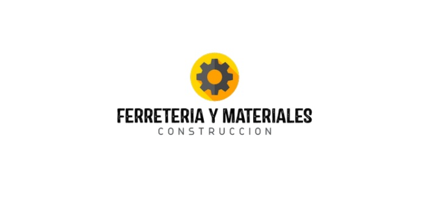

HISTORIA
A una temprana edad, provisto de los más valiosos capitales: la experiencia y el dinamismo, allá por el año 1986, el Sr. Francisco Lopez Juarez,
inicia planificada mente sus operaciones mercantiles con el nombre de Ferreteria y Materiales, encaminada a la distribución a nivel local y
provincial de la línea de bricolaje, especializada en artículos para la construcción civil, artesanía y pequeña industria.
A lo largo de estos 32 años de ininterrumpida actividad, Ferreteria y Materiales, siempre bajo la gerencia de su propietario Francisco Lopez Juarez,
no solo ha conseguido dirigir su esfuerzo por un camino claro de éxitos, sino que ha logrado un espacio importante en el mercado ferretero nacional.
Desde el inicio se implementaron políticas claras, a satisfacer las exigentes necesidades de los clientes, herramientas a las que atribuimos, en parte, nuestro éxito.
Para cumplir un proyecto como el que hoy estamos liderando, no solo atribuimos el éxito a la excelente administración y dirección en la toma de decisiones,
sino que, cada vez hemos incrementado la inversión de capitales y colaboradores, a la medida de las exigencias del constante crecimiento.
Es justo reconocer que desde el inicio de nuestras actividades gracias al buen manejo de los valores, hemos obtenido amplio apoyo de los bancos locales.
En el último año hemos incrementado significativamente nuestras importaciones, las mismas que en su mayor parte las hacemos directamente de los fabricantes y en algunos
otros de sus representantes y distribuidores en los lugares de origen.
De esta manera mantenemos el más completo stock de productos de ferretería que ofrecemos a los precios más bajos y competitivos de Mexico.